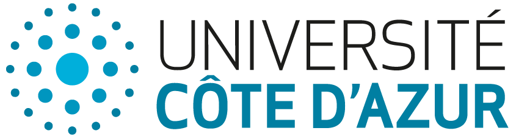
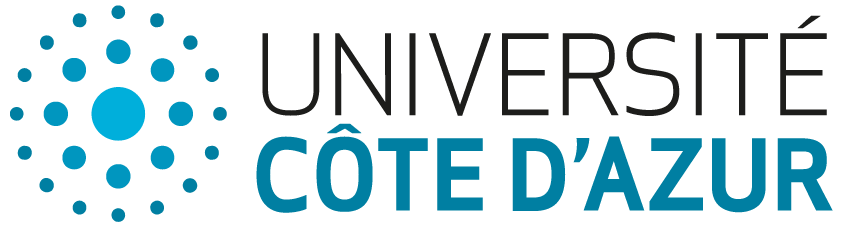

Pierre Monnin
Research Scientist at Centre Inria d'Université Côte d'Azur
Research within the Wimmics team
Teaching within EFELIA Côte d'Azur and Polytech Nice Sophia


Centre Inria d'Université Côte d'Azur
2004, route des Lucioles, BP 93
06902 Sophia Antipolis Cedex -- France
Pierre Monnin
Current position
I am a Research Scientist in AI within the Centre Inria d'Université Côte d'Azur, member of the Wimmics team, common with the I3S laboratory (Université Côte d'Azur, CNRS). I am also a temporary lecturer at Université Côte d'Azur.
My research focuses on neuro-symbolic AI with and for knowledge graphs. I investigate interactions between domain knowledge in knowledge graphs and different forms of reasoning in a neuro-symbolic perspective (e.g., injection of domain knowledge in Machine Learning models, analogical reasoning). In particular, I study such interactions in the context of the lifecycle of knowledge graphs (construction, matching, refinement, mining, knowledge discovery), and their usage in downstream applications (e.g., recommender systems, explainable AI). My work involves both theoretical and applied perspectives, often in interdisciplinary settings (e.g., biomedical, educational domains). I was the Principal Investigator of the ECLADATTA project and I am an Investigator of the AT2TA project (both funded by the French National Research Agency). I am the spokesperson (2025 – 2027) of AfIA, the French Artificial Intelligence Society.
Research stays
- February-July 2025: Visiting Fellow at Télécom Paris (Paris, France). Regular visits with Mehwish Alam (5 weeks in total)
- January 2025: Visiting Fellow at Università degli Studi di Bari Aldo Moro (Bari, Italy). 3-week visit with Claudia d'Amato
- November 2024: Visiting Fellow at INESC-ID, Instituto Superior Técnico, Universidade de Lisboa (Lisbon, Portugal). 2-week visit with Miguel Couceiro
- January 2024: Visiting Fellow at Università degli Studi di Bari Aldo Moro (Bari, Italy). 3-week visit with Claudia d'Amato
Previous positions
- 2023-2025: Junior Fellow in AI at Université Côte d'Azur
- 2023-2024: Temporary lecturer at TELECOM Nancy
- 2022-2023: Temporary lecturer at TELECOM Nancy
- 2020-2023: Researcher at Orange
- 2016-2020: PhD student at Université de Lorraine in the Orpailleur team of the LORIA laboratory, under the supervision of Amedeo Napoli and Adrien Coulet.
I defended my thesis, entitled Matching and mining in knowledge graphs of the Web of data - Applications in pharmacogenomics, on December 16, 2020.
My work was part of the PractiKPharma project, funded by the French National Research Agency (ANR).
Interests
Neurosymbolic AI - Knowledge graphs - Semantic Web - Graph Embedding
 
